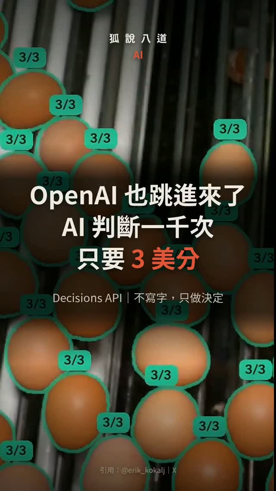

Facebook｜OpenAI Decisions API：將文字與圖片轉成可程式使用的決策

一句話摘要
Decisions API 的定位不是寫文章或聊天，而是把「這張圖是否破損？」「這筆工單該送往哪個隊列？」「這段內容是否符合規範？」這類問題，轉成可以直接被程式消費的機率、選項或分數，作為自動化流程的快速判斷層。
影片的主張
影片稱 OpenAI 在 10 月 6 日開放 Decisions API 公開測試，並以輸送帶雞蛋為例：系統判斷其屬於乾淨、髒污或破損。影片也將它放進「決策模型」脈絡，提及 TypeSafe Jev、Cloudflare Clef 與 Claude Haiku。
其中「不寫文章、不聊天，只交回機率、選項或分數」的核心描述，與 OpenAI 官方文件相符；不過案例的 0.27 秒延遲、每 1,000 次約 US$0.03，以及其他產品名稱與發表時間，未在本次找到足以交叉確認的一手資料，因此不將其當作正式規格。
官方文件已確認的能力
OpenAI 開發者文件顯示：
- Decisions API 目前為 public beta，使用專用的 POST /v1/decisions 端點。
- 輸入可為文字、圖片，或兩者合用。
- 回傳的 typed answer 可為：條件為真的機率、固定選項集合中的選擇，或依 rubric 產生的分數。
- 適用於內容分類、請求路由與工作優先排序。
- 官方稱它相較 Responses API 約快 10 倍。
- 當前僅支援 gpt-6-luna。
這代表它更像一個面向工作流的「判斷介面」，而非要產出長篇自然語言的通用回應端點。
成本與案例數字要怎麼看
官方頁面列 /v1/decisions 搭配 gpt-6-luna 的輸入價格為每百萬 token US$0.10，且沒有 output token、cache-read 或 cache-write 費用。這是 token 計價，不是固定的每次或每千次請求價格。
因此影片所說「每 1,000 次約 3 美分」有可能在某個輸入長度與處理條件下成立，但不能直接外推到所有影像、解析度、問題數量或提示內容。導入時應以實際樣本量測 token、延遲、錯誤率與端到端成本。
最適合的實作位置
- 先判斷、再生成：先用 Decisions API 將客服信件、表單或圖片分流；只有需要說明、撰寫或對話時，才交給 Responses API 或 Agent。
- 固定輸出空間：將結果限制成少量明確選項，例如「通過／人工覆核／拒絕」，避免生成式輸出難以被工作流解析。
- 將低信心案例送人工：以機率或分數設定閾值；介於灰區的項目不要自動採取不可逆動作。
- 將規則寫成 rubric：品質檢查、內容審核與優先級判斷，需要把業務定義、反例與可接受誤差明確化。
- 分離判斷與執行權限：API 判定「可能需退款」不等於它可以退款；付款、封鎖、刪除與對外訊息仍應保留人類或另一道授權關卡。
尚待確認的延伸主張
- TypeSafe Jev 的公開產品資訊與影片所述的 9 月發表。
- Cloudflare Clef 是否為該影片描述的開源決策模型，以及 10 月 1 日推出的說法。
- 「Claude Haiku 5.5」與 10 月 7 日發表的說法；本次可取得的 Anthropic 官方產品頁為 Claude Haiku 4.5（2025-10-15）。
原始與查核連結
- Facebook Reel：https://www.facebook.com/share/v/1CRL3W4mWK/?mibextid=wwXIfr
- OpenAI Decisions API 官方文件：https://developers.openai.com/api/docs/guides/decisions
- Anthropic Claude Haiku 4.5 官方公告：https://www.anthropic.com/news/claude-haiku-4-5
- 本文擷取紀錄：source-archive/2026-10-09-facebook-hinet-openai-decisions-api.json